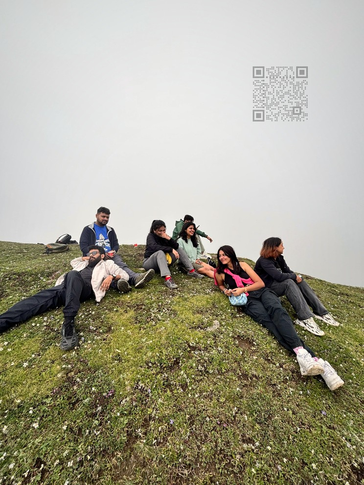

Memory Box
Point a phone at this print. The photo develops into depth, mist rolls across the hill, and the camera steps into the moment.

Point a phone at this print. The photo develops into depth, mist rolls across the hill, and the camera steps into the moment.